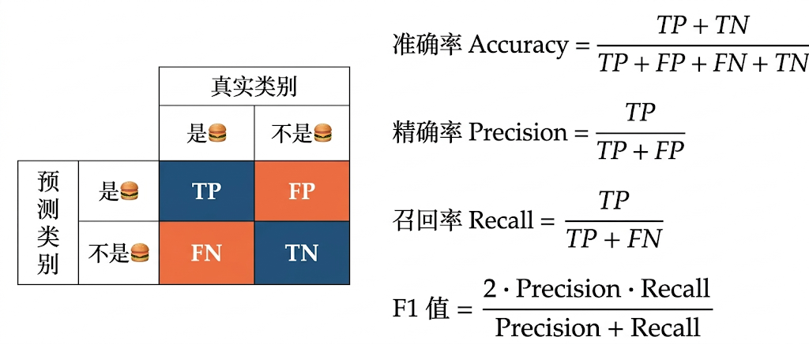
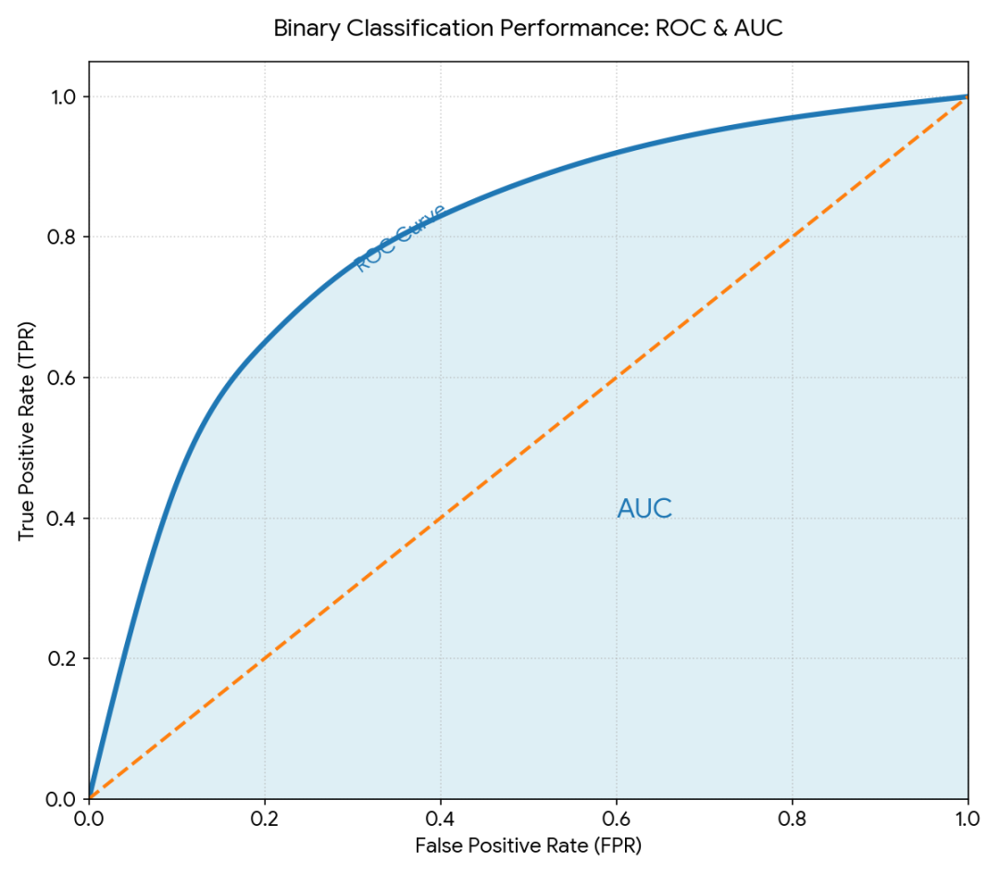

实战评估
"没有测量，就没有改进。"--开尔文勋爵（Lord Kelvin），物理学家
深度学习通过前向传播、反向传播和梯度下降等训练机制，把数据中的规律或模式逐步学习到模型参数中。
那在模型成功训练之后，或训练期间，我们要如何评估模型的能力呢？又可以通过哪些维度来衡量模型的好坏？
这一讲，我们将结合实际的伪代码案例，把前面关于深度学习的训练技巧真正运用一遍。这里我们不会贴 Python 代码，因为对于大部分没有编程经验的同学来说难度较大，因此我们继续采用中文伪代码的方式来讲解。
但在正式进入实战伪代码编程之前，我们先要介绍在 AI 算法领域中经常使用到的模型效果评估方法。
分类任务
要评估模型在分类任务场景上的效果，主要围绕"类别的区分能力"来展开。下面是几个非常常用的评估指标。
准确率
首先要介绍的是准确率，英文名为 Accuracy，表示模型在所有样本中预测正确的比例。
比如准备了 100 封邮件让模型预测，其中 50 封是垃圾邮件，模型正确识别了 48 封；另外 50 封是正常邮件，模型也正确识别了 48 封。那么总共预测正确了 96 封，因此准确率就是 96%。
精确率
其次是精确率，英文名为 Precision，表示的是"模型预测为正类的样本中，实际确实为正类的比例"。
它反映的是：模型一旦把某个样本判成正类，到底有多大把握是判对了。换句话说，精确率越高，说明"误报"越少。
比如准备了 100 封邮件让模型预测，模型预测其中 52 封是垃圾邮件，而实际上真正的垃圾邮件有 50 封，并且这 50 封都被成功判成了垃圾邮件，那么精确率就是 50/52≈96.15%。
召回率
召回率英文名为 Recall，表示的是"实际为正类的样本中，被模型正确识别出来的比例有多少"。
它反映的是模型有没有把该找出来的正类尽可能都找出来。召回率越高，说明"漏判"越少。
比如准备了 100 封邮件让模型检测，其中有 50 封是垃圾邮件，模型正确识别了 48 封，剩余 2 封被漏判为正常邮件，那么此时召回率就是 48/50=96%。
混淆矩阵
混淆矩阵就是大家耳熟能详的 TP、FP、TN、FN。假如我们定义新冠感染为阳性，那么：
- TP 表示真阳性，即模型预测为阳性，事实上也确实是阳性。
- TN 表示真阴性，即模型预测为阴性，事实上也确实是阴性。
- FP 表示假阳性，即模型预测为阳性，实际上却是阴性，也就是误报。
- FN 表示假阴性，即模型预测为阴性，实际上却是阳性，也就是漏报。

F1 值
F1 值英文中一般写作 F1 Score，表示的是精确率和召回率的调和平均数。
为何需要这样一个调和平均数？因为在很多实际场景中，模型可能会出现"精确率高但召回率低"，或者"召回率高但精确率低"的情况。
这时如果只看其中一个指标，就容易得出片面的结论。而 F1 值可以对二者进行综合评估，帮助我们更全面地判断模型效果。

ROC-AUC
ROC 曲线起源于第二次世界大战时期的雷达信号检测系统，后来被广泛引入医疗诊断和机器学习领域。
ROC 是 Receiver Operating Characteristic 的缩写，中文常译作"受试者工作特征曲线"。它以真阳性率（True Positive Rate，TPR）为纵坐标，以假阳性率（False Positive Rate，FPR）为横坐标，通过绘制模型在不同分类阈值下的 TPR 和 FPR，形成一条曲线。
AUC 表示曲线下面积，英文为 Area Under the ROC Curve。它是在 ROC 曲线的基础上，计算 ROC 曲线与坐标轴围成的面积，用一个数值来概括模型整体的分类能力。

为什么需要 ROC 曲线呢？想象一下，我们要建立一个医疗模型，用于预测患者是否患有某种疾病。模型不会一上来直接说"有病"或"没病"，而是通常会先为每个患者输出一个介于 0 到 1 之间的"患病概率得分"。
这时候，我们就需要设定一个阈值（例如 0.5）：得分高于阈值则判定为"患病"，低于阈值则判定为"健康"。
但问题在于，不同阈值下，模型的表现会不一样：有的阈值会让模型更容易抓到阳性患者，但也更容易误报；有的阈值会让模型更谨慎，误报少了，但可能漏掉更多真正患病的人。
因此，ROC 曲线的意义就在于：它不是只看某一个阈值，而是把各种阈值下的表现都画出来，让我们看到模型整体的区分能力。
而 AUC 则用一个 0 到 1 之间的数值来量化这种整体性能。AUC 越接近 1，说明模型对正负样本的综合区分能力越强。
回归任务
对于回归任务，评估模型的效果应当围绕"预测值和真实值之间的误差大小"来展开。下面是几种比较常用的评估指标。
平均绝对误差
这是非常直观且易于理解的评估指标，用所有样本的 |预测值-真实值| 的平均值来衡量模型的误差大小。
这种评估方法的优点是简单、直观，容易理解；但它也有缺点，那就是对异常值不够敏感。比如在预测房价时，个别极端高价房带来的巨大误差，并不会像平方那样被明显放大。
均方误差
这种评估方法顾名思义，跟"平方"有关系。它的定义是：所有样本的 (预测值-真实值)^2 的平均值。
它的好处是：由于误差会被平方，因此那些偏差特别大的样本会被放大，从而更容易暴露出模型在异常值或大误差样本上的问题。
但这也意味着，均方误差对异常值更加敏感，有时会让少数极端样本对整体评估结果产生较大影响。
其他性能评估方法
除了以上这些常见指标，还有几个经常会用到、大家也一定要知道的评估概念。
鲁棒性
鲁棒性用于评估模型的"抗干扰、抗折腾、不崩"的能力。
也就是说，当模型面对不完美输入、噪声、扰动、异常数据、分布外场景时，是否依然能够输出相对稳定、合理、不跑偏的结果。
举例来说：比如图像有点模糊、有些遮挡，但识别模型依然能把它识别出来，我们就会说这个模型的鲁棒性较强。
困惑度
困惑度用于衡量语言模型在预测下一个词（或下一个 token）时的不确定性大小，反映模型对语言规律的掌握程度。
一般来说，困惑度越低，说明模型越不"困惑"，对接下来的词越有把握，也往往意味着它对语言规律掌握得越好。
举个例子，比如模型看到一句话：
今天天气很___
如果模型很容易就能猜到后面大概率会接"好""热""冷"等合理的词，那它的困惑度就会比较低；如果它觉得后面什么词都差不多，拿不准，那它的困惑度就会比较高。
再举个更形象的例子：
想象你在玩"接龙游戏"。如果模型看到前面的内容后，心里非常清楚"下一个词八九不离十就是这个"，那么它的困惑度就低；如果它觉得后面可能出现几十种、上百种词，而且都差不多，那它就很"困惑"。
需要注意的是，困惑度主要用于语言模型，而且不同模型如果分词方式不同，困惑度数值通常也不能直接简单比较。
置信度
置信度表示模型对自己预测结果"有多确定"的程度，通常以 0 到 1 之间的分数或概率形式表示。
举个例子：
就像一个学生回答问题。他可能给出了正确答案，但如果他小声嘟囔"我觉得大概是 A 吧……"，这代表他的把握不大，也就是置信度较低；如果他斩钉截铁地说"绝对是 A"，那就代表他的置信度较高。
置信度的核心作用，是帮助系统判断模型的输出是否值得直接采用。比如我们可以设定一个阈值（例如 0.8）：如果模型的置信度低于 0.8，系统就不自动执行操作，而是转交给人工处理。
不过要注意，置信度高并不一定代表模型一定正确。现实中有些模型虽然"很自信"，但其实判断错了。因此在很多严肃场景里，置信度通常还需要结合概率校准、人工复核等机制一起使用。
深度学习分类任务实战
- 输入数据：已标注的"样本特征矩阵"（每行 1 个样本，每列 1 个特征）、"样本标签"（正类标记为 1，负类标记为 0）
- 超参数设定：学习率 = 0.001，训练轮次 = 100，批次大小 = 32，隐藏层1神经元数 = 64，隐藏层2神经元数 = 32
步骤1：搭建神经网络结构
# 1
参数集合 = {
隐藏层1权重：随机生成（特征数行 × 64列）的矩阵，
隐藏层1偏置：生成（1行 × 64列）的全0向量，
隐藏层2权重：随机生成（64行 × 32列）的矩阵，
隐藏层2偏置：生成（1行 × 32列）的全0向量，
输出层权重：随机生成（32行 × 1列）的矩阵，
输出层偏置：生成（1行 × 1列）的全0向量
}
# 2
函数 ReLU(输入值)：
对输入值中所有小于0的数，替换为0；大于等于0的数保持不变，返回结果
函数 ReLU导数(输入值)：
对输入值中大于0的部分返回1，小于等于0的部分返回0
函数 Sigmoid(输入值)：
计算 1 / (1 + e的(-输入值)次方)，返回结果（输出值介于0-1，代表正类概率）步骤2：训练神经网络
（前向传播->计算损失->反向传播->更新参数）
# 1
循环 轮次 从1到100：
# 1. 数据分批（避免单次计算量过大）
将"样本特征矩阵"和"样本标签"按"批次大小=32"分成多个批次
# 2. 逐批次训练
循环 每个批次 中的"批次特征"和"批次标签"：
# （1）前向传播：计算各层输出
隐藏层1输入 = 批次特征 × 隐藏层1权重 + 隐藏层1偏置
隐藏层1输出 = ReLU(隐藏层1输入)
隐藏层2输入 = 隐藏层1输出 × 隐藏层2权重 + 隐藏层2偏置
隐藏层2输出 = ReLU(隐藏层2输入)
输出层输入 = 隐藏层2输出 × 输出层权重 + 输出层偏置
模型预测概率 = Sigmoid(输出层输入) # 每个样本的正类概率
# （2）计算损失（二分类用交叉熵损失，衡量预测与真实的差距）
损失值 = 平均值( -批次标签 × ln(模型预测概率) - (1-批次标签) × ln(1-模型预测概率) )
# （3）反向传播：计算各参数的梯度（用链式法则求损失对参数的偏导）
输出层输入梯度 = 模型预测概率 - 批次标签
输出层权重梯度 = 隐藏层2输出的转置 × 输出层输入梯度 ÷ 批次大小
输出层偏置梯度 = 平均值(输出层输入梯度)
隐藏层2输入梯度 = (输出层输入梯度 × 输出层权重的转置) × ReLU导数(隐藏层2输入)
隐藏层2权重梯度 = 隐藏层1输出的转置 × 隐藏层2输入梯度 ÷ 批次大小
隐藏层2偏置梯度 = 平均值(隐藏层2输入梯度)
隐藏层1输入梯度 = (隐藏层2输入梯度 × 隐藏层2权重的转置) × ReLU导数(隐藏层1输入)
隐藏层1权重梯度 = 批次特征的转置 × 隐藏层1输入梯度 ÷ 批次大小
隐藏层1偏置梯度 = 平均值(隐藏层1输入梯度)
# （4）更新参数（用梯度下降，沿损失减小方向调整参数）
隐藏层1权重 = 隐藏层1权重 - 学习率 × 隐藏层1权重梯度
隐藏层1偏置 = 隐藏层1偏置 - 学习率 × 隐藏层1偏置梯度
隐藏层2权重 = 隐藏层2权重 - 学习率 × 隐藏层2权重梯度
隐藏层2偏置 = 隐藏层2偏置 - 学习率 × 隐藏层2偏置梯度
输出层权重 = 输出层权重 - 学习率 × 输出层权重梯度
输出层偏置 = 输出层偏置 - 学习率 × 输出层偏置梯度
# 3. 每轮结束后输出状态
打印（第X轮训练完成，当前轮次损失值：Y）步骤3：模型预测
（用训练好的参数对新样本分类）
函数 模型预测(新样本特征, 参数集合)：
# 复用前向传播逻辑计算预测概率
隐藏层1输出 = ReLU(新样本特征 × 参数集合.隐藏层1权重 + 参数集合.隐藏层1偏置)
隐藏层2输出 = ReLU(隐藏层1输出 × 参数集合.隐藏层2权重 + 参数集合.隐藏层2偏置)
预测概率 = Sigmoid(隐藏层2输出 × 参数集合.输出层权重 + 参数集合.输出层偏置)
# 设定阈值（默认0.5），概率≥0.5判定为正类，否则负类
若 预测概率 ≥ 0.5：
返回 类别1（正类）及 预测概率
否则：
返回 类别0（负类）及 预测概率学习时刻
模型评估（Model Evaluation）：指在模型训练之后，使用一组指标去衡量模型到底学得怎么样、能不能真正解决问题。模型评估不是只看"预测对了多少"，而是要从不同角度综合判断模型的质量。
准确率（Accuracy）：指模型在全部样本中预测正确的比例。它适合用来粗略评估模型整体表现，但如果不同类别的数据数量非常不均衡，仅看准确率可能会产生误导。
精确率（Precision）：指模型预测为正类的样本中，实际确实为正类的比例。精确率越高，说明模型"报出来的正类"越靠谱，误报越少。
召回率（Recall）：指实际为正类的样本中，被模型成功识别出来的比例。召回率越高，说明模型漏掉的重要目标越少。
F1值（F1 Score）：指精确率和召回率的调和平均数。它适合在"误报"和"漏报"都重要的场景中使用，能够更全面地反映分类模型的综合效果。
混淆矩阵（Confusion Matrix）：指用 TP、FP、TN、FN 四种结果来统计模型分类表现的方法。它像一张"错题分析表"，能帮我们看清模型究竟是容易误报，还是更容易漏报。
ROC曲线（ROC Curve）：指模型在不同分类阈值下，真阳性率与假阳性率之间关系所形成的曲线。它反映的是模型整体的区分能力，而不是某一个固定阈值下的表现。
AUC（Area Under the Curve）：指 ROC 曲线下方的面积。AUC 越大，通常说明模型越善于把正类和负类区分开。
平均绝对误差（MAE, Mean Absolute Error）：指所有样本的"预测值与真实值之差的绝对值"的平均数。它能直观反映模型平均偏差了多少，比较容易理解。
均方误差（MSE, Mean Squared Error）：指所有样本的"预测值与真实值之差的平方"的平均数。由于平方会放大大误差，因此它对异常值更敏感，更容易暴露模型在极端样本上的问题。
鲁棒性（Robustness）：指模型在面对噪声、模糊、遮挡、异常输入或陌生场景时，依然能保持稳定输出的能力。鲁棒性强，说明模型不容易被轻微干扰"带跑偏"。
困惑度（Perplexity）：指语言模型在预测下一个词或下一个 token 时的不确定性大小。困惑度越低，通常表示模型对语言规律掌握得越好。
置信度（Confidence）：指模型对自己当前预测结果"有多确定"的程度。置信度高并不一定代表模型一定正确，但它可以帮助系统判断哪些结果可以自动处理，哪些结果需要人工介入。